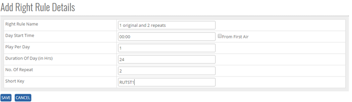

	<section>
		<article>
			<h2>Right Rule<span></span></h2>
			<div>
				<p></p>
				

				<p>Right Rule comes under Commercial Module. </p>

				<p><b>ADD new Right Rule in the Master:</b></p>

				<p>GO TO >>Master >>Commercial>>Right Rule>> <b>ADD</b></p>

				<p>Click Add Button on top right corner of the page and the following page will open.</p>

				<div class="triangle-border top">
					
				</div>


				<p>User can add Right Rule Name, Day start time, play per day Duration Or Day, No of Repeat.</p>

				<p><b>To add Right Rule in the system, System will be having following fields</b></p>

				<p>- User will enter Right Rule name in Text Box (alphanumeric is valid)</p>

				<p>- User will enter Day Start Time in numeric value </p>

				<p>- From First Air, if ticked, will disable Day Start Time and consider the day start time from First Air of a content.</p>

				<p>- User will Enter Play Per Day in Numeric Value up to 5digit </p>

				<p>- User will Enter Duration of Day in numeric value up to 5digit</p>

				<p>- User will Enter No of Repeat in numeric value up to 5 digit </p>

				<p>Click on <b>Save</b> button user will get alert message <b>"Right Rule Record Updated successfully"</b>.</p>

				<p><b>Note:</b> By Default status will be ACTIVE </p>

				<p><b>Modifying Existing Right Rule</b></p>

				<p>The user who has right to edit can edit the existing Right Rule list </p>

				<p>Go To>>Master>>Commercial>>Right Rule>>Search Right Rule Name>>Click Radio Button( Right Rule Name)>><b>EDIT</b></p>

				<p><b>Note:</b> By default Right Rule status will show ACTIVE</p> 

				<div class="triangle-border top">
					
				</div>


				<p>Click on <b>Save</b> button user will get alert message <b>"Record Added successfully"</b> and Click on <b>Cancel</b> Button, the Record will not get updated.</p>


				<p><b>Deactivate/ Activate Existing Right Rule</b></p>

				<p><b>DeActive</b> - Click on Deactivate Button, once the button is clicked it will ask confirmation message "Are you sure you want to Deactivate this record" with "OK and cancel" button.</p>

				<p>If user clicks on OK Button, record will get deactivated and if clicked on Cancel, record will not get deactivated.</p>

				<p><b>Active</b> - Same way once a record is deactivated, system will show Active button. If user clicks on Active button, record will get activated.</p>


				<p><b>Search /Show All Criteria</b></p>

				<p>- User can search the Right Rule name and then click on <b>Search</b>, it will show the result as per the search criteria. User can search name by single alphabet.</p>

				<p>- If user want to check all Right Rule name then click on <b>Show All</b> Button. It will show the list. </p>

				<p>- Click on page no, System will navigate the desired page, per page 10 records will be displayed.</p>
			</div>
		</article>
	</section>